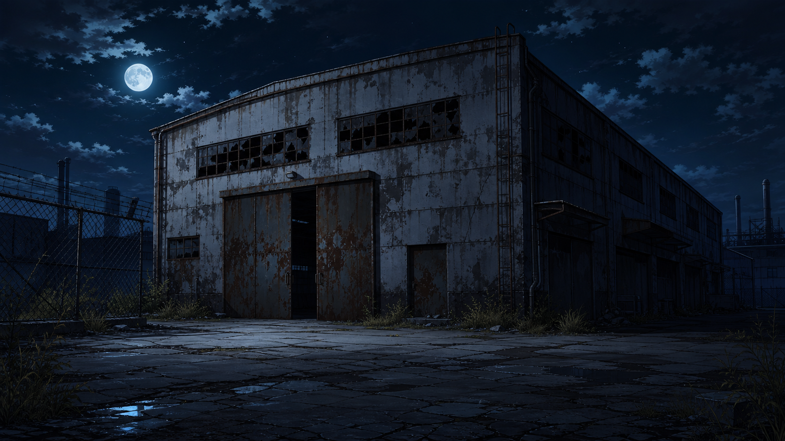
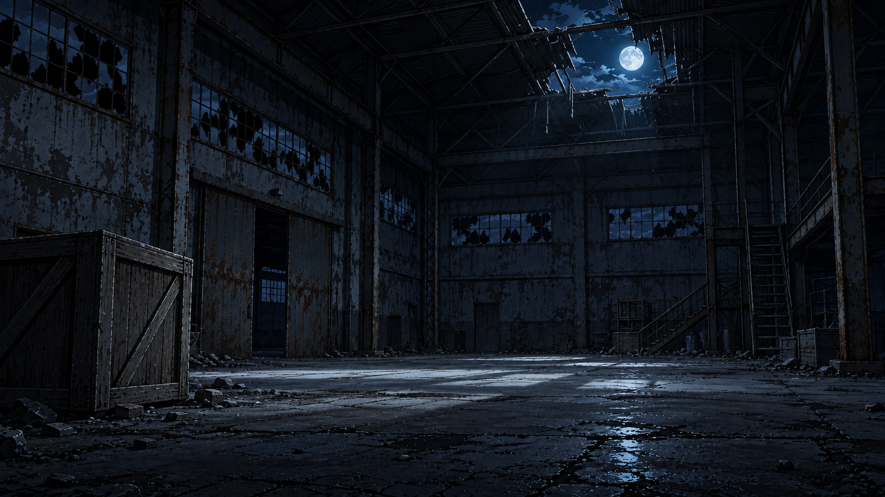
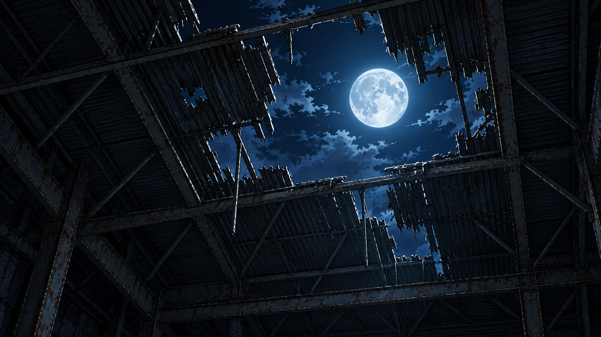
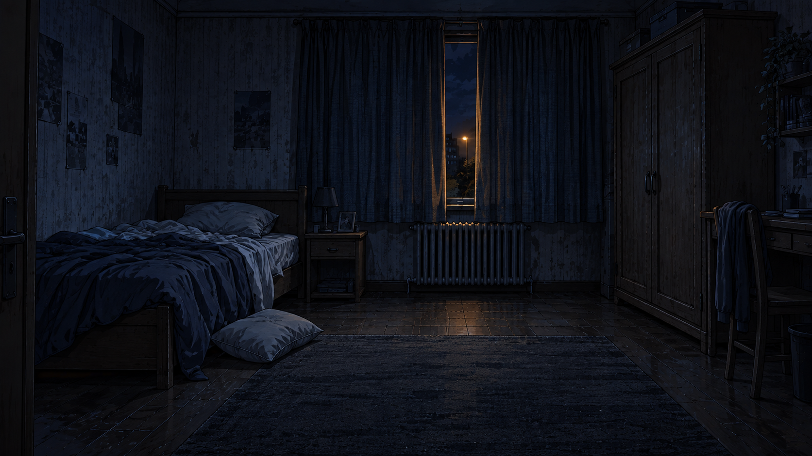
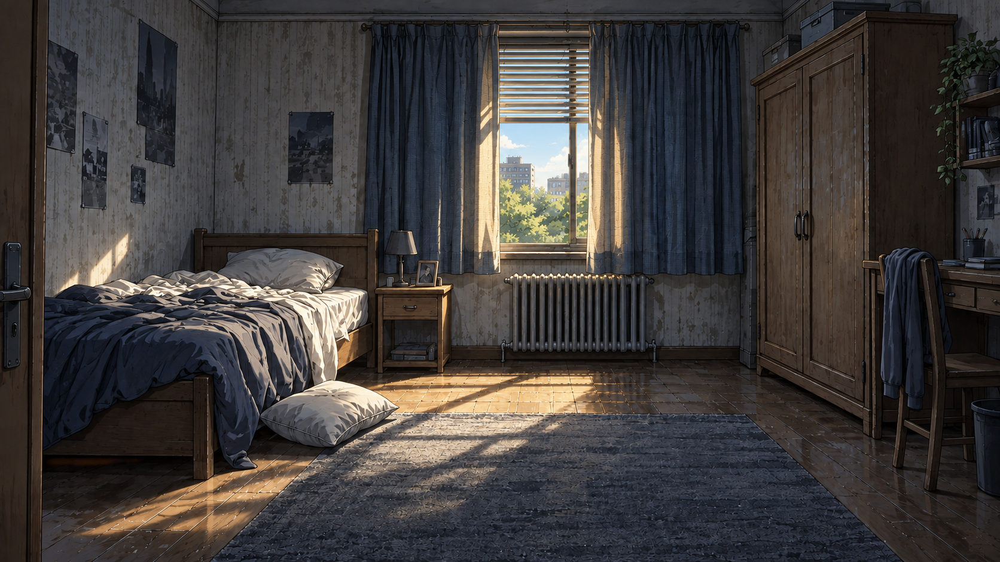
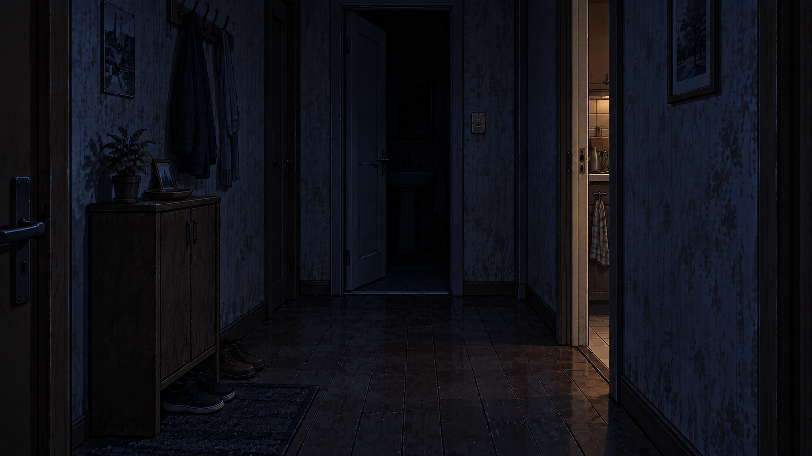
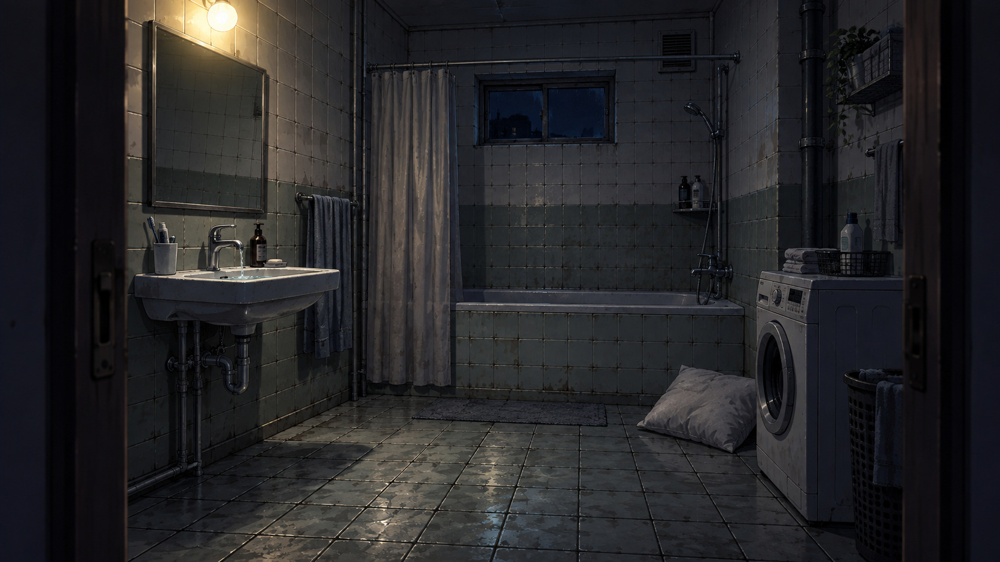
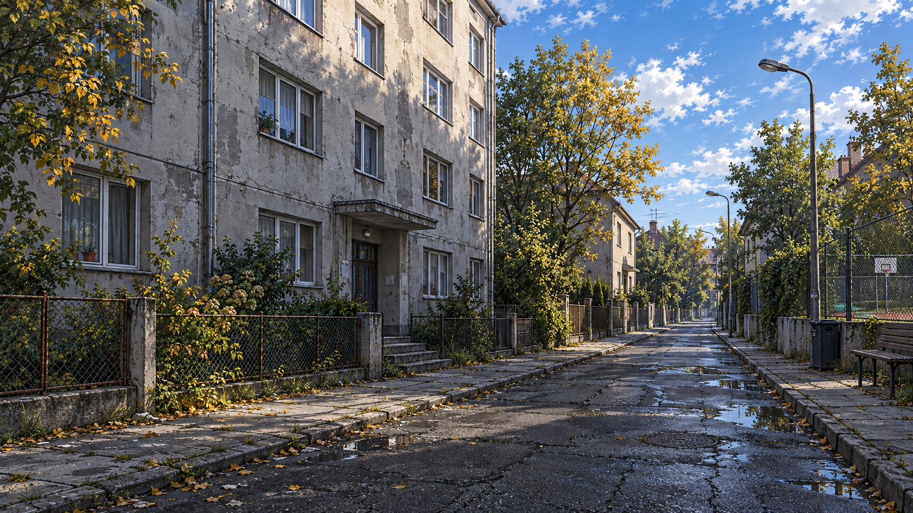
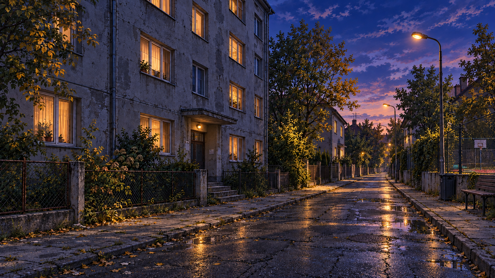

Единая рисованная стилистика по референсу склада. Холодная лунная ночь, тревожная квартира после кошмара и тихая жилая улица. Дневные и вечерние версии сохраняют ракурс.
9 фонов · ImageGen · нажми на изображение, чтобы рассмотреть его.

Лунная ночь, изоляция, вход в кошмар.

Холодный пол, ящик, луна через прорванную крышу.

Первый взгляд героя с пола: слишком близкая луна.

Тревога после кошмара, тусклый свет из-за штор.

Сентябрьский свет и запоздалое пробуждение.

Тёмный порог ванной и слабый свет из кухни.

Свет включился: зеркало, раковина, упавшая подушка.

Выход из дома: солнце после долгой непогоды.

Возвращение с друзьями: прохлада, фонари, передышка.